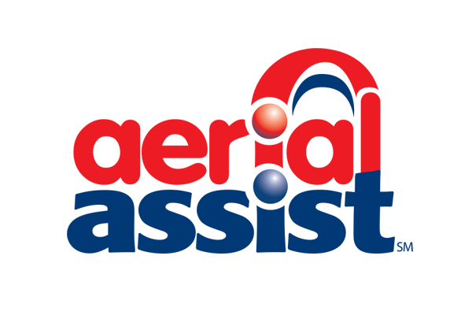
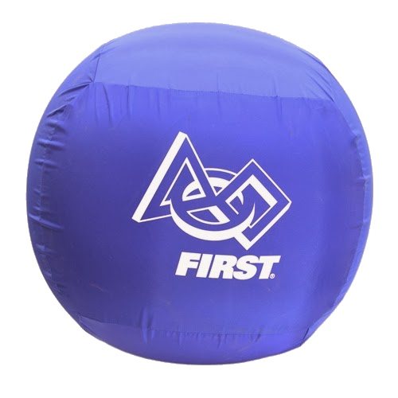
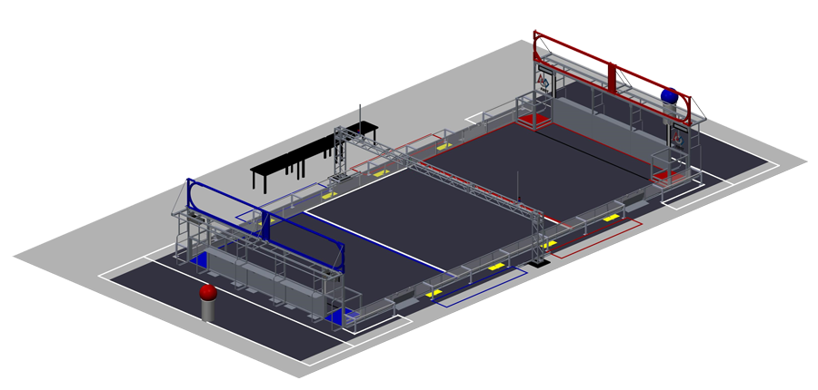

2014 Game: Aerial Assist
Reveal Video
Overview
In Aerial Assist, two alliances consisting of three individual teams (red and blue), compete against each other to score the most points. The goal of the game is to put large two foot exercise balls into goals on either side of the arena, while assisting your partners to bring the balls across the field. Points can be scored in three ways: successfully scoring into goals, assisting your alliance partners, and shooting the balls over the truss in the middle of the field. Each alliance has two minutes and thirty seconds to score as many points as they can.
Game Objects
Aerial Assist is played with special 2 foot diameter exercise balls with red or blue FIRST branded nylon covers. Each alliance may start with up to three balls during the autonomous period, but must score any leftover autonomous balls before they are allowed to enter a new ball into play.
The Field
Aerial Assist is played on a 25-foot by 54-foot field. Colored tape separates the field into three zones, the red zone, white zone, and the blue zone. Black tape extends from each low goal to mark the front of the Goalie Zone. A large audio truss is stretched across the width of the field. Robots can shoot the balls over the truss for points. On each end of the field are two High Goals that are separated by a 1 foot wide divider. Each high goal is outlined with LED light strings which will illuminate at various moments during a match. There are also two Low Goals at each end of the field with openings on three of its' sides. Finally, there are two pedestals behind each alliance station. Here balls will be kept waiting to be put into play by the human player.
Autonomous Period
During the first ten seconds of the match drivers are not allowed to control their robots. Instead, teams pre-program their robots to be able to try and perform basic tasks. Each robot is able to start with a ball and attempt to shoot it into either the High Goal or Low Goal. For the first five seconds, one high/low pair of goals with be "hot" and award bonus points to robots that score in the "hot goal". Robots may also be awarded points for moving their robot into their zones.
Teleoperated Period
After the ten second Autonomous Period, drivers assume direct control of their robots. Alliances must cycle balls from one end of the field into either goal, one at a time. Because of this, points are awarded for making assists, tosses over the truss, and catches from tossed balls. Once a ball is scored, another one can be taken from the alliance's pedestal and put into play.
Scoring
In Aerial Assist points are awarded after the ten second autonomous period ends and once a cycle is complete. Alliances can gain more points per cycle by assisting each other through the three zones. Assists are earned once a robot passes the ball from one zone to an alliance robot in another zone. Up to three assists can be awarded per cycle. No bonus is awarded for cycles with one assists. Two assists give a 10 point bonus. Three assists give a 30 point bonus. If a robot tosses the ball over the truss, towards their goals, they will be awarded 10 points for that cycle. If a robot catches their alliance partners truss toss, another 10 bonus points will be awarded for the cycle. In Aerial Assist fouls give points to the other alliance, the amount varying depending on the severity of the foul. In the end the alliance with the largest point total wins.